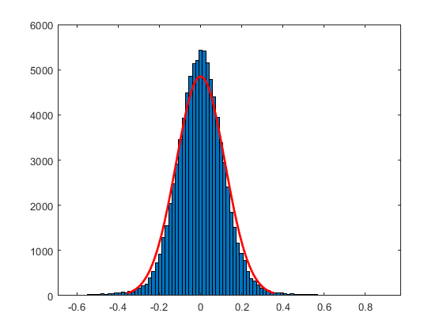
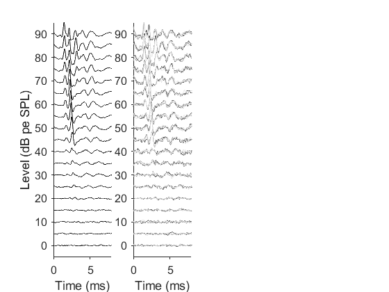
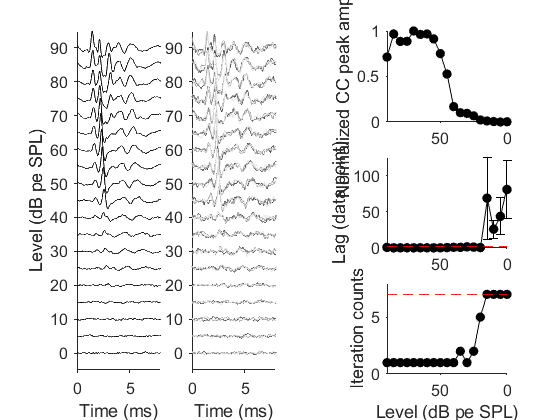

clear;
addpath('.\function');
data_name='wt-01.mat';
spl_data_path=['.\mice_threshold\miceGroupMean\grouped_' data_name];
load(spl_data_path);
sampling_point=1:200;
capture_time = time(sampling_point);
tic;
for j =1:length(spl)
lagIdx=[];res=[];lag=[];
dataMat=[];
for i =1:3
dataMat=[dataMat;data_group(j).step_data(i).data(:,:)];
end
ccm=triu(corrcoef(dataMat'),1);
ccp=ccm(find(ccm));
h=histfit(ccp,100,'normal');
[peak(j,:),ind] = max(h(2).YData);
cc_peak(j,:)=h(2).XData(ind);
for k=steps
data=data_step_mean(j,k).data(:,sampling_point);
[lagIdx,res(k,:),lag(k,:),cc(k,:)] = cross_test_3signal(data);
data_step_mean(j,k).data=data;
end
lag_info(j).spl=spl(j);
lag_info(j).res=res;
lag_info(j).lag=lag;
lag_info(j).cc=cc;
res_idx=find(res>=3,1,'first');
if isempty(res_idx)
num_iter(j)=max(steps)+1;
num_act_iter(j)=max(steps);
is_signal(j)=0;
else
num_iter(j)=res_idx;
num_act_iter(j)=res_idx;
is_signal(j)=1;
end
end
toc;
disp(spl);
disp(num_act_iter);
disp(is_signal);
Elapsed time is 0.864008 seconds.
Columns 1 through 13
90 85 80 75 70 65 60 55 50 45 40 35 30
Columns 14 through 19
25 20 15 10 5 0
Columns 1 through 13
1 1 1 1 1 1 1 1 1 1 1 2 1
Columns 14 through 19
2 5 7 7 7 7
Columns 1 through 13
1 1 1 1 1 1 1 1 1 1 1 1 1
Columns 14 through 19
1 1 0 0 0 0

figure(1)
subplot(1,4,2)
for j = 1:length(spl)
k=num_iter(j);
if k==8
k=7;
end
data=data_step_mean(j,k).data;
for i =1:3
plot(time(sampling_point),data(i,:)*2e6+spl(j),'-','Color',[0.3 0.3 0.3]*i);
hold on
end
end
xlabel('Time (ms)')
ylim([-5,95])
xlim([0,8])
set(gca,'box','off','tickdir','out','fontname','arial','fontsize',12)
subplot(1,4,1)
for j = 1:length(spl)
data=data_step_mean(j,7).data;
plot(time(sampling_point),mean(data)*2e6+spl(j),'k-');
hold on
end
xlabel('Time (ms)')
ylabel('Level (dB pe SPL)')
ylim([-5,95])
xlim([0,8])
set(gca,'box','off','tickdir','out','fontname','arial','fontsize',12)

subplot(3,3,3)
cc_peak_norm=normalize(cc_peak,'range');
plot(spl,cc_peak_norm,'k-','Marker','.','MarkerSize',24)
xlim([0,90]);
ylabel('Normalized CC peak amplitude')
set(gca,'xdir','reverse','box','off','tickdir','out','fontname','arial','fontsize',12);
subplot(3,3,6)
for j = 1:length(spl)
k=num_iter(j);
if k==8
k=7;
end
lags(j,:)=lag_info(j).lag(k,:);
end
lag_mean=mean(lags');
lag_std=std(lags');
errorbar(spl,lag_mean,lag_std,'k')
hold on
scatter(spl,lag_mean,'k.','SizeData',600)
plot(spl,spl*0+2,'r--');
xlim([0,90]);
set(gca,'xdir','reverse','box','off','tickdir','out','fontname','arial','fontsize',12);
ylabel('Lag (data point)');
subplot(3,3,9)
plot(spl,num_act_iter,'k-','Marker','.','MarkerSize',24);
hold on
xlim([0,90]);
ylim([0,8]);
plot(spl,spl*0+7,'r--')
set(gca,'xdir','reverse','box','off','tickdir','out','fontname','arial','fontsize',12);
xlabel('Level (dB pe SPL)');
ylabel('Iteration counts');
save(['.\mice_threshold\mice_res\res_' data_name],'data_name','spl','lag_info','num_act_iter','num_iter','is_signal','steps')

[f,gof]=sigFit(spl,(num_act_iter-1)/(max(num_act_iter)-1));
xData=0:0.1:90;
YData=f(xData);
thres_fit=round(xData(find(YData<=0.9,1,'first')));
disp(sprintf('Sigmoid fit of normalized iteration, and threshold at 0.9 of the fit is %.2d dB',thres_fit));
Sigmoid fit of normalized iteration, and threshold at 0.9 of the fit is 18 dB